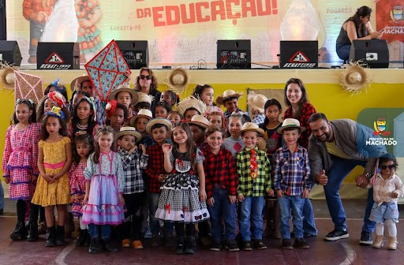
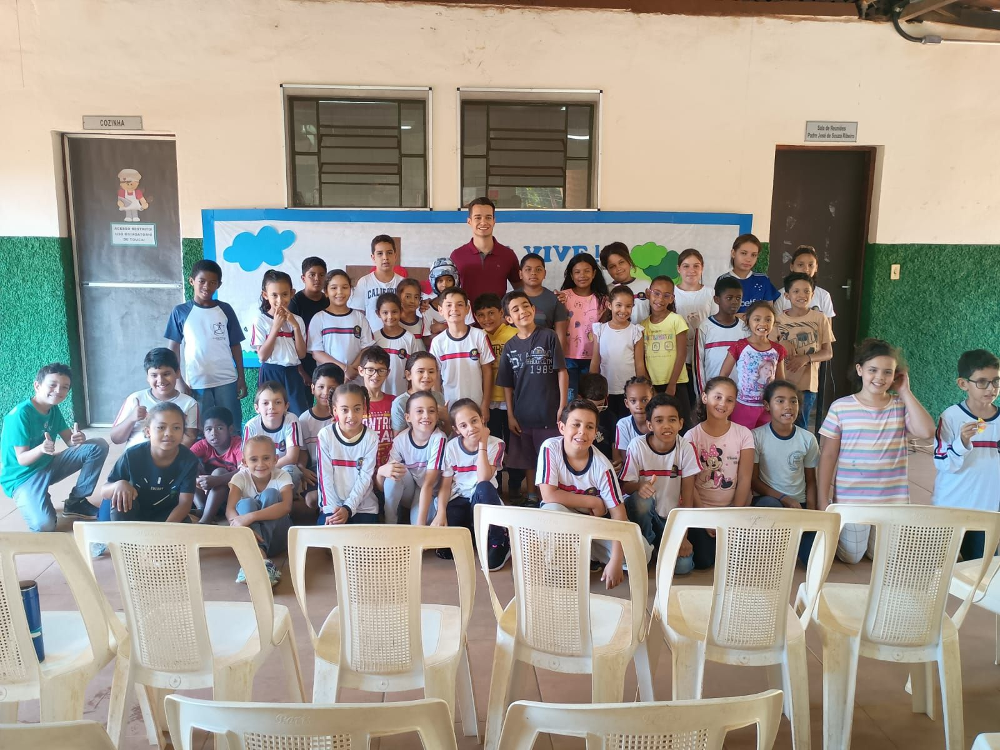
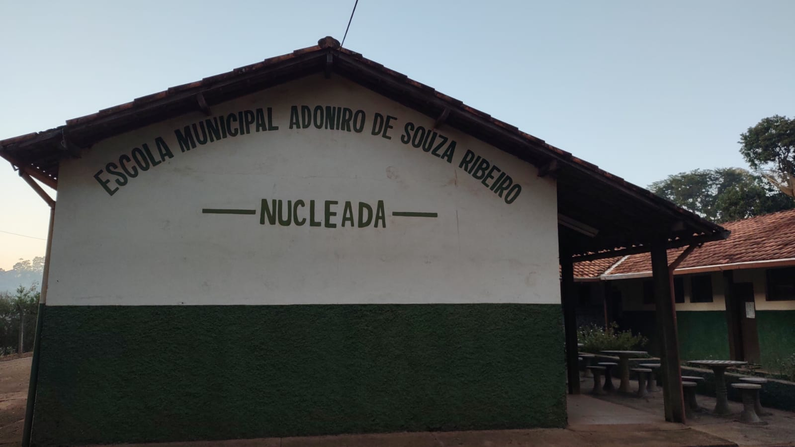
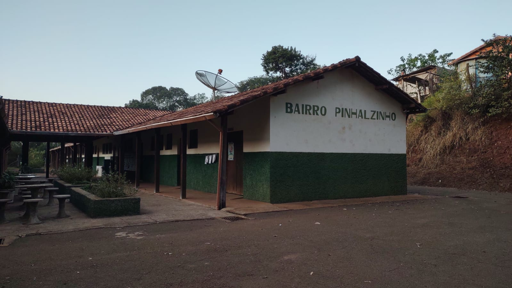

Escola Municipal Adoniro de Souza Ribeiro
Aulas
A Escola Municipal Adoniro de Souza Ribeiro atende 80 alunos, da zona rural, moradores dos bairros: Pinhalzinho, Campo Alegre, Inhaúmas, Papagaio, Macacos, Pica Pau, Cadóis, Ouvidor, Pântano, Santo Antônio, Girau das Onças, Mato Dentro.

Educação Infantil
4 anos aos 5 anos

Ensino Fundamental
6 anos a 10 anos de idade
Nossa história
A Escola Municipal Adoniro de Souza Ribeiro, localizada no Bairro Pinhalzinho, foi nucleada em 31/07/1999, de acordo com a Lei nº 134 de 27/11/1998... Lei Municipal nº 1202 de 10/12/1998. Passou a funcionar a partir do dia 22/07/1999 atendendo os alunos das seguintes escolas rurais: Escola Municipal Irmão Albano Constâncio, Escola Municipal Vicente Honório Caixeta, Escola Municipal Anexa a Vicente Honório Caixeta e Escola Antônio Cândido Teixeira.

.jpeg)
FORMAÇÃO
Seu filho vai aprender em um ambiente seguro, acolhedor e receptivo. Nossa atmosfera
permite que as crianças respeitem a si mesmas e às outras.
Por meio de diversas experiências criativas, podemos aumentar a capacidade
da criança de socializar com outras pessoas, ser criativa, poder se expressar
e se desenvolver. Oferecemos um programa educacional de alta qualidade, que é aprimorado constantemente.
SALA DE RECURSO
Áreas de lazer são importantes para as crianças, pois elas precisam de um espaço para
se movimentar, explorar ambientes, trabalhar o fazer de conta, interpretar e criar.
Áreas de lazer estimulam a mente, resolvem problemas e ajudam as crianças a aprender
e desenvolver habilidades em todos os domínios. E, é claro, as áreas de lazer também
são importantes para desenvolver a destreza física e a boa saúde.
